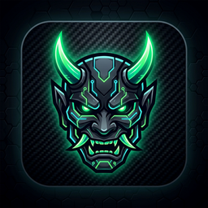

ONI
BROWSER
Hunt the Web.
00:00:00
2026年10月15日
•
Thursday, October 15
Google
Oni OS Search
✕
Launch
Oni OS Settings
✕
Oni OS History
✕
Oni OS Downloads
✕
Pin New App
✕
Application Title
Target URL
Custom Icon URL (Optional)
Cancel
Pin App
Oni Browser
Oni OS Environment
Edit
Pinned Applications
🔍 Open Search
＋ Pin New App
◧ Toggle Widgets
⏱ Open History
⚙ Open Settings
↻ Refresh Home
✂ Cut
📋 Copy
📥 Paste
Select All
Clear
↗ Open
＋ Open in New Tab
🔗 Copy Link
✏ Edit App
🗑 Unpin App